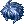

Valentine's Day
Valentino's Quest

Valentino will start the main quest from Valentine's Day. He can be found next to Valentina, in Prontera (prontera 159/185).
He will advise you to follow the path; after reaching the final destination he will require you to collect the following items:
| Item list |
|---|
100  Fragment Fragment
|
1  Electric Wire Electric Wire
|
1  Rusty Iron Rusty Iron
|
Completing the whole quest will award you with Coppola and a Cherry Blossom Hat, as well as unlocking the Costume Magical Feather crafting quest.
Valentina's Shop
Valentina can be found in Prontera (prontera 161/184), she will exchange  Gold Coin for various Headgears or Garments, but only if you're married!
Gold Coin for various Headgears or Garments, but only if you're married!
This is a listing of all once-available items. Some may not be available.
| Item | Cost |
|---|---|
| Heart Half A | 750
|
| Heart Half B | 750
|
| Blue Heart Half A | 750
|
| Blue Heart Half B | 750
|
|  Blue Hairpiece | 850
|
| Pink Hairpiece | 850
|
| Blue Angel Feather | 850
|
| Pink Angel Feather | 850
|
| Valentine Crown of Love | 950
|
| Valentine Crown of Devotion | 950
|
| Pink Heartmuffs | 950
|
| Blue Heartmuffs | 950
|
Exclusive Quests


Garment Recolor
You can also recolor the following Garment with Miles for 3  Mysterious Dyestuffs and 50
Mysterious Dyestuffs and 50  Gold Coins at Third Floor of the Main Office.
Gold Coins at Third Floor of the Main Office.
| Base Garment | Color Choices | |
|---|---|---|
 Love Key Love Key
|
|